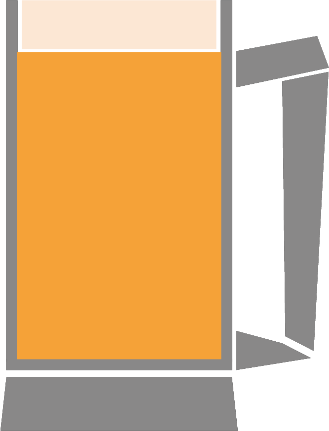

<mat-sidenav-container class="sidenav-container">
  <mat-sidenav
    #drawer
    class="sidenav"
    fixedInViewport="true"
    [attr.role]="(isHandset$ | async) ? 'dialog' : 'navigation'"
    [mode]="(isHandset$ | async) ? 'over' : 'side'"
    [opened]="!(isHandset$ | async)">
    <mat-toolbar class="sidenavTitle">Menu</mat-toolbar>
    <mat-nav-list>
      <a mat-list-item routerLink="/mainnav/home"> Home</a>
      <a mat-list-item routerLink="/mainnav/beers">Beer</a>
      <a mat-list-item routerLink="/mainnav/account">Account</a>
      <a mat-list-item routerLink="/mainnav/logout" (click)="logout()">Logout</a>
    <div class="spacing"></div>
    </mat-nav-list>
  </mat-sidenav>
  <mat-sidenav-content>
    <mat-toolbar class="title">
      <button
        type="button"
        aria-label="Toggle sidenav"
        mat-icon-button
        (click)="drawer.toggle()"
        *ngIf="isHandset$ | async">
        <mat-icon aria-label="Side nav toggle icon"></mat-icon>
      </button>
      
      <span class="logostuff">
          Hold My Beer
        </span>
    </mat-toolbar>
    <div class="contentColor">
    <router-outlet></router-outlet>
    </div>
  </mat-sidenav-content>
</mat-sidenav-container>
